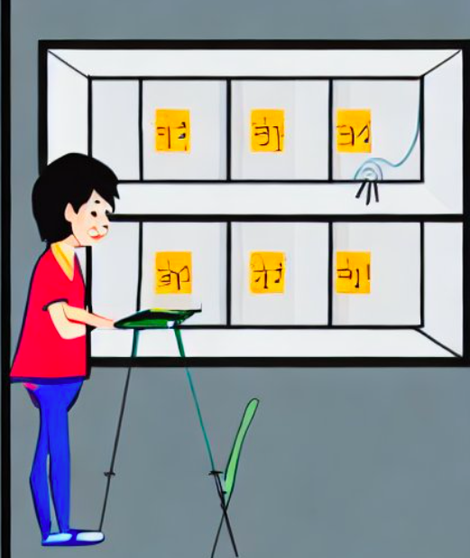

L'habitació xinesa
L'analogia de l'habitació xinesa és una eina valuosa per a comprendre la intel·ligència artificial.
|
Imagina't que tenim una "habitació xinesa", una mena d'habitació enigmàtica amb dues obertures: una d'entrada (inputs) i una altra de sortida (outputs). Encara que desconeguem el seu funcionament intern, tenim la capacitat de subministrar-li informació per la ranura d'entrada i, com a resposta, rebre'n resultats per la ranura de sortida. Suposa que en aquesta habitació tenim a una persona que rep els missatges i els contesta. Per la ranura d'entrada introduïm una pregunta en xinès i que per la ranura de sortida en surt una resposta coherent, també en xinès. Tot i les aparences, no podem assegurar que dins l'habitació hi hagi algú que sap xinès pel sol fet que respongui correctament als inputs. Podria ser que la persona de l'habitació no fes més que consultar un llibre de codis i aplicar unes regles de traducció, i que no tingués ni idea de xinès. Igualment, pel fet que una computadora apliqui unes regles i uns protocols d'actuació, no podem dir que pensi. I aquí sorgeix una altra pregunta. Què és pensar, doncs? Així és com operen alguns sistemes d'intel·ligència artificial, emmagatzemant una gran quantitat d'informació a l'interior de l'habitació, mentre nosaltres només percebem allò que surt com a resposta. Imatge generada per Stable Diffusion, |
 |
Article Viquipèdia Habitació xinesa.
El test de l'habitació xinesa és un experiment mental, proposat originalment per John Searle i popularitzat per Roger Penrose, mitjançant el qual es tracta de rebatre la validesa del Test de Turing i de la creença que una màquina pot arribar a pensar. Searle compara la ment amb una habitació tancada, només dotada d'una ranura per als inputs (entrades de dades) i una per als outputs (sortides de dades). Suposem que per la primera ranura introduïm una pregunta en xinès, i que per l'altra en surti una resposta coherent també en xinès. Tot i les aparences, no podem assegurar que dins l'habitació hi hagi algú que sap xinès pel sol fet que respongui correctament als inputs. Podria ser que els habitants de l'habitació no fessin més que consultar un llibre de codis i aplicar unes regles de traducció, i que no tinguessin ni idea de xinès. Igualment, pel fet que una computadora apliqui unes regles i uns protocols d'actuació, no podem dir que pensi. I aquí sorgeix una altra pregunta. Què és pensar, doncs?
El test de l'habitació xinesa és un experiment mental, proposat originalment per John Searle i popularitzat per Roger Penrose, mitjançant el qual es tracta de rebatre la validesa del Test de Turing i de la creença que una màquina pot arribar a pensar.
Cas d'estudi 1: Anàlisi d'una resposta de ChatGPT
Activitat grupal
Li demanem a ChatGPT que ens ajudi a buscar un objecte perdut.
"Et demano que m'ajudis a trobar les ulleres per llegir. No sé on les vaig deixar ahir a la nit."
Rúbrica Cas d'estudi 1: Anàlisi d'una resposta de ChatGPT
- Activitat
- Nom
- Data
- Puntuació
- Notes
- Reinicia
- Imprimeix
- Aplica
- Finestra nova
| Assoliment Excel·lent | Assoliment Notable | Assoliment Suficient | Assoliment Insuficient Alt | Assoliment Insuficient | |
|---|---|---|---|---|---|
| Creativitat i varietat en la pluja d'idees | Diverses idees originals, útils i variades. (2) | Bones idees, majoritàriament útils. (1.75) | Algunes idees, però poc variades. (1.50) | Poques idees o repetitives. (1) | Sense idees o idees sense sentit. (0) |
| Claredat i organització del document | Text molt ben estructurat, net, coherent i sense errors. (2) | Text clar amb estructura adequada. (1.75) | Text entenedor però amb errors o desordre. (1.50) | Text difícil de seguir o amb moltes faltes. (1) | Document inexistent o incomprensible. (0) |
| Anàlisi de la resposta de ChatGPT | Anàlisi crítica, detallada i reflexiva de la resposta. (2) | Bona anàlisi, amb reflexió clara. (1.75) | Anàlisi bàsica o superficial. (1.50) | Anàlisi molt breu o poc reflexiva. (1) | Sense anàlisi o anàlisi fora de context. (0) |
| Comparació entre llista pròpia i la de ChatGPT | Comparació precisa, argumentada i ben estructurada. (2) | Comparació clara amb alguns matisos. (1.75) | Comparació bàsica, sense profunditzar. (1.50) | Comparació poc clara o superficial. (1) | Sense comparació o comparació errònia. (0) |
| Treball cooperatiu | Tots els membres del grup participen activament i aporten idees. (2) | La majoria participen correctament. (1.75) | Alguns participen de manera irregular. (1.5) | Participació molt desigual. (1) | Treball individual sense cooperació real. (0) |
Cas d'estudi 2: Anàlisi d'una situació
Activitat grupal
Li fem una consulta genèrica del que observem al nostre entorn a ChatGPT i li demanem que faci una explicació.
"T'explicaré una situació: visc en un bloc de pisos molt normal. Hi ha tres plantes amb tres portes a cada planta. La consola del porter electrònic (sistema d'intèrfon i obertura de porta remota) que hi ha a la porta d'entrada a l'edifici té 4 botons per a cada planta. El quart botó de cada planta no té rètol i no comunica amb ningú. Em pots explicar per què hi ha aquesta consola?"
La resposta ha estat:
Clar! Sembla que aquesta consola del porter electrònic amb els quatre botons per a cada planta té un propòsit interessant. A continuació, et donaré una explicació de per què podria estar present aquest quart botó sense rètol:
- Emergències: Aquest botó podria estar reservat per a situacions d'emergència, com incendis o altres riscos. Prémer aquest botó podria activar una alerta als serveis d'emergència o al porter per garantir la seguretat dels residents.
- Servei tècnic: Potser aquest botó és utilitzat pel servei de manteniment o tècnic. Quan es pressiona, pot alertar als encarregats de les reparacions o el manteniment d'alguna avaria o problema a l'edifici.
- Accés restringit: El botó sense rètol podria ser una forma d'accés restringit per a certs moments. Pot ser que sigui utilitzat pel personal autoritzat o per als serveis de l'edifici que necessitin accedir a les plantes.
- Actualitzacions futures: A vegades, aquest tipus de botons poden estar planificats per a funcions futures. Encara que ara no tingui un ús clar, podria ser preparat per a una actualització o funció addicional.
- Errada de disseny: També és possible que el quart botó sense rètol sigui simplement una errada de disseny o un error, i no tingui cap funció real.
En resum, aquest quart botó podria tenir diverses finalitats possibles, com ara situacions d'emergència, serveis tècnics o accessos restringits. Pot ser una part important del pla de seguretat i funcionament de l'edifici, encara que en aquests moments no tingui una funció aparent.
Rúbrica Cas d'estudi 2: Anàlisi d'una situació
- Activitat
- Nom
- Data
- Puntuació
- Notes
- Reinicia
- Imprimeix
- Aplica
- Finestra nova
| Assoliment Excel·lent | Assoliment Notable | Assoliment Suficient | Assoliment Insuficient Alt | Assoliment Insuficient | |
|---|---|---|---|---|---|
| Anàlisi de l’estructura del text | Anàlisi molt clara i crítica de l’organització del text. (2) | Anàlisi clara amb petits detalls obviats. (1.75) | Anàlisi bàsica però correcta. (1.50) | Anàlisi superficial o incompleta. (1) | No hi ha anàlisi de l’estructura. (0) |
| Ordenació de causes amb justificació | Ordenació coherent i molt ben argumentada. (2) | Ordenació correcta amb justificacions clares. (1.75) | Ordenació acceptable amb justificacions bàsiques. (1.50) | Ordenació poc clara o justificacions febles. (1) | Sense ordenació o justificacions incorrectes. (0) |
| Identificació de la causa gairebé impossible | Identificació precisa i molt ben raonada. (2) | Identificació correcta amb una bona explicació. (1.75) | Identificació bàsica amb poca justificació. (1.50) | Identificació dubtosa o explicació pobre. (1) | Sense identificar o sense explicar. (0) |
| Conclusions redactades | 3 o més conclusions clares, crítiques i ben redactades. (2) | 3 conclusions correctes, clares però senzilles. (1.75) | 2-3 conclusions bàsiques però entenedores. (1.50) | 1 conclusió o conclusions molt superficials. (1) | Sense conclusions o incomprensibles. (0) |
| Presentació i organització del document | Document molt ordenat, net i sense errors greus. (2) | Document clar amb estructura adequada. (1.75) | Document entenedor però amb errors de forma. (1.50) | Document desordenat o amb molts errors. (1) | Document inexistent o il·legible. (0) |